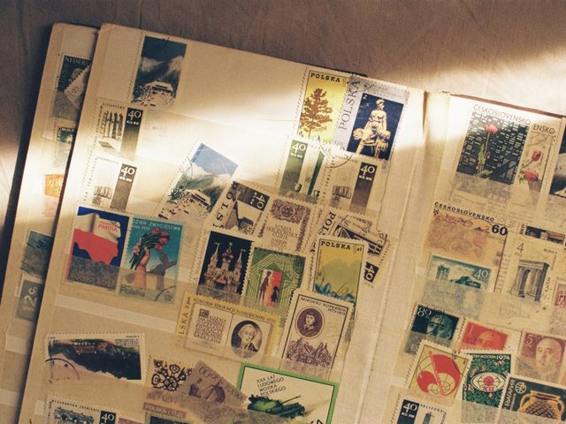

VOCABULARY · 主題 2000 字 UNIT 36
Other verbs (2)．其他動詞 (2)
日常動作的動詞，共 37 個（bring 到 kill）。很多是不規則動詞，三態要一起背。
共 37 個單字．點 🔊 聽發音
1bringv.
帶來
三態 bring／brought／brought
Please bring your textbook tomorrow.明天請帶課本來。

2brushv.
刷
brush one's teeth 刷牙
Brush your teeth after every meal.每餐飯後都要刷牙。
3carryv.
提；搬；帶著
過去式 carried
Can you help me carry this box?你可以幫我搬這個箱子嗎？
4catchv.
抓住；趕上
三態 catch／caught／caught
Hurry up, or you can't catch the bus.快一點，不然你趕不上公車。
5cheatv.
欺騙；作弊
Never cheat on a test.考試絕對不要作弊。
6choosev.
選擇
三態 choose／chose／chosen
Choose the one you like.選你喜歡的那一個。

7clapv.
拍手
過去式 clapped
Everyone clapped for the new student.大家為新同學拍手。
8closev.
關上；闔上
相反 open
Please close the door.請關門。
9comev.
來
三態 come／came／come
Can you come to my party?你能來我的派對嗎？

10collectv.
收集
My brother collects stamps.我弟弟收集郵票。
11correctv.
訂正；改正
也可當形容詞：正確的
The teacher corrected our mistakes.老師訂正我們的錯誤。
12copyv.
抄襲；複製
過去式 copied
Don't copy other people's homework.不要抄別人的作業。

13countv.
數；計算
My little sister can count from 1 to 100.我妹妹會從 1 數到 100。
14coverv.
覆蓋
be covered with 被…覆蓋
The mountain is covered with snow.山上覆蓋著雪。

15cryv.
哭；大叫
過去式 cried
The baby cries when she is hungry.寶寶餓了就會哭。
16cutv.
切；剪
三態 cut／cut／cut；V-ing cutting
I cut my finger with a knife.我用刀切到手指了。

17digv.
挖
三態 dig／dug／dug
The dog is digging a hole.狗正在挖洞。
18definev.
下定義
Can you define this word?你能為這個字下定義嗎？
19dropv.
掉落；滴
過去式 dropped
Leaves drop from the trees in fall.秋天樹葉從樹上掉下來。
20enterv.
進入
直接接地點，不加 into
Please take off your shoes before you enter the house.進屋前請脫鞋。

21feedv.
餵
三態 feed／fed／fed
Don't feed the animals in the zoo.不要餵動物園裡的動物。
22fightv.
打架；奮鬥
三態 fight／fought／fought
The two boys fought over a toy.兩個男孩為了一個玩具打架。
23followv.
跟隨；遵守
Follow me, and I'll show you the way.跟我來，我帶你去。

24fryv.
煎；炸
過去式 fried
Mom is frying eggs in the kitchen.媽媽在廚房煎蛋。
25gov.
去
三態 go／went／gone
I go to school by bus.我搭公車上學。
26growv.
成長；種植
三態 grow／grew／grown
Farmers grow rice in the fields.農夫在田裡種稻。
27handv.
交出；遞
hand in 繳交；也可當名詞：手
Please hand in your homework.請交作業。
28hangv.
掛
三態 hang／hung／hung
We hung the picture on the wall.我們把畫掛在牆上。
29helpv.
幫忙
Can you help me with my math?你可以幫我做數學嗎？

30hitv.
打；撞
三態 hit／hit／hit；V-ing hitting
He hit the ball very hard.他用力擊球。
31holdv.
握著；舉辦
三態 hold／held／held
She is holding a baby in her arms.她懷裡抱著一個嬰兒。
32huntv.
打獵
Lions hunt for food at night.獅子在晚上獵食。

33hurryv.
趕快
hurry up 快一點
Hurry up! We're late.快一點！我們遲到了。

34jumpv.
跳
jump rope 跳繩
The kids are jumping on the bed.孩子們在床上跳。

35kickv.
踢
He kicked the ball into the goal.他把球踢進球門。

36knockv.
敲
k 不發音
Someone is knocking on the door.有人在敲門。
37killv.
殺死
The lion killed a zebra.獅子殺死了一隻斑馬。
FOCUS
不規則動詞三態
| 原形 | 過去式 | 過去分詞 |
|---|---|---|
| bring | brought | brought |
| catch | caught | caught |
| choose | chose | chosen |
| come | came | come |
| cut／hit | cut／hit | cut／hit |
| dig | dug | dug |
| feed | fed | fed |
| fight | fought | fought |
| go | went | gone |
| grow | grew | grown |
| hang | hung | hung |
| hold | held | held |
FOCUS
規則動詞要注意的拼法
| 規則 | 例 |
|---|---|
| 子音＋y → ied | carry → carried、copy → copied、cry → cried、fry → fried、hurry → hurried |
| 短母音＋一個子音 → 重複字尾 | clap → clapped、drop → dropped |
| V-ing 也要重複字尾 | cut → cutting、dig → digging、hit → hitting |